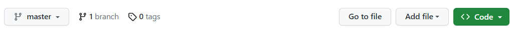

Introduction.
When learning to be a scientist, there are two important principles to follow:
First, Science is not a solo endeavour - we collaborate and share methods and data with the wider scientific community.
Second, our work must be reproducible with the same data - either by you or others working independently.
In this practical, we will focus on how to be good scientists and collaborators by:
- Organising data and workflows with RStudio
- Reproducible analyses in R
- Version control with git
- Making projects available on GitHub.
Before this practical, please do the following:
- Install R for your operating system: https://cran.ma.imperial.ac.uk/
- Install RStudio: https://posit.co/download/rstudio-desktop/
- Install git for your operating system following the instructions here: https://git-scm.com/book/en/v2/Getting-Started-Installing-Git
- Make a github account: https://github.com/signup
Why use R?
“This is R. There is no if. Only how.”
– Simon ‘Yoda’ Blomberg, R-help (April 2005)
There are many languages to choose, but we will focus on R. It works interactively and almost anything is possible! Along with Python, it is fast becoming the lingua franca of academic research, statistics and data science. It is used for:
- Processing and tidying data
- Statistical analyses
- Data visualistion (
ggplot) - Creating interactive web applications (
shiny) - Generating reports and presentations (
knitr,slidify) - Creating portable projects (RStudio Projects)
The analytical power of R lies in its many packages (19,925 as of 25th Sep 2023). Hundreds of these are written for geoscience, ecology and evolutionary biology. A list of packages are hosted on the Comprehensive R Archive Network (known as CRAN): https://cran.r-project.org/.
If you need a quick crash course in R after this practical, try [here] (https://github.com/susjoh/E4StatsTutorials)
Palmer Penguins.
Congratulations! You have started a new job as a research on the Palmer penguins project in sunny Antarctica. This is a publicly funded project, meaning the data and analyses should be in the public domain. You will use data from three different species of penguins and explore relationships between their morphometric traits.
Here are the penguins <3

Do you want to know more about this dataset? Click the link here for more info.
Getting Started in R and RStudio.
Creating an R Project.
An R Project is a stand-alone folder
(repository) that holds all the information needed to carry out
a project. Using R Projects (.RProj)
allows easier file imports, improved reproducibility and collaboration.
It tells R where to look for data files and scripts,
meaning that a script can be run different machines and environments
without problems.
Exercise 1
Create a new project called penguin_project by selecting
File > New Project and following the instructions. If
there is an option to Create a git repository then click
it. (If you don’t have it, we will troubleshoot later in the
practical.)
On the Files tab in the lower right, you will see the files in the current working directory.
Structuring an R Project.
Using a good project layout makes life easier. There is no single way to structure a project, but an suggestion is shown here. This is based on a blog post on Nice R Code available here.

datacontains all data used in the analysis and should be treated as read only - these files should never be edited or overwritten. Rather, they should be processed within R scripts.docscontains the paper and/or reports associated with the analysis (in Word, R Markdown, LaTeX, etc).figscontains any figures generated by R scripts.resultscontains any simulation outputs, processed data etc. NB. Data infigsandresultscan be treat ed as disposable.[filename].Rare R scripts. You can split your workflow into units that are logical for you, such as (a) load, merge and clean data, (b) analyse the data and (c) create outputs such as results tables and figures. Some researchers use a numbering method so that the order in which to run different scripts is clear.[repository_name].Rprojis the portable R project.README.mdis a READ ME file that contains a description of the project.
Exercise 2
Start to structure your R project. Download the penguin dataset here. Where should this go in your repository?
Create a file called
README.mdand save it in the main directory. Write a brief description of what the project contains. You can edit this as you go. If you want to do basic formatting, look at the cheat sheet inHelp > Markdown Quick Reference. This will appear in the Help tab in the lower right hand pane.
Troubleshooting [click]
If it goes to your browser instead of a download, save the text in a
file penguin_data.txt. Use Notepad or even RStudio (Choose
New File > Text File)
Using RStudio
RStudio should look like this.

On the upper left is your R Script
- here, you can write commands and send them to the console by clicking
Run or by typing Ctrl-Enter. # is
the comment character in R.
On the lower left is the Console
pane - this is the engine of R. You can give
instructions to R by directly typing at the prompt
(>).
On the upper right is the pane for your Environment, History, Git etc..
On the lower right, you can browse the packages installed on your machine, open files and search R Help. This pane will also show plots when we run them later in the practical.
Exercise 3
Create a new script, save it to your main directory, and start exploring your research question. Be creative! Your goals are to:
- Install and load
library(tidyverse)(NB. This contains the packagesggplot2for plotting,readrfor easier data reading, anddplyrfor data manipulation) - Load the penguin data into R using
read_table - Run some linear regressions with
lm() - Make and save some plots into
figs/usingggplot - Subset the data to only look at a particular species or sex.
- Save this edited dataset in
results/.
If you are newer to R, use the hints below to get started.
If you have some experience with R, try to do this without the hints below.
If you have are experienced with R, try writing this in an Rmarkdown
doc or explore the more detailed dataset in the
palmerpenguins package in R.
Install and load tidyverse: [click]
# Load the tidyverse library.
library(tidyverse)
# If the package doesn't exist, run `install.packages("tidyverse")` and then `library(tidyverse)`. You only need to run the install once.
Read in the data: [click]
penguins <- read_table("data/penguin_data.txt")
glimpse(penguins)
Run a linear regression: [click]
model1 <- lm(body_mass_g ~ flipper_length_mm, data = penguins)
summary(model1)
Create a nice plot in ggplot2: [click]
ggplot(penguins, aes(x = flipper_length_mm, y = body_mass_g, colour = species)) +
geom_point() +
stat_smooth(method = "lm")
Save the plot in your /figs folder: [click]
ggsave("figs/1_flipper_bodymass_regression.png")
#NB. This saves the last plot that was run!
Subset the data: [click]
penguins_female <- subset(penguins, sex == "female")
Save the edited dataset: [click]
write_tsv(penguins_female, "results/1_penguin_female_only.txt")
Version control with git.
Now it’s time to start doing version control.
When you look at the upper right hand pane of RStudio, you may have a tab that says Git. If not:
- Check you installed git by typing
gitinto the Terminal tab in the lower left hand pane. If nothing appears, install git to your machine using the instructions at the start of the practical. - Go to
Tools > Project Options... > Git/SVN > Version Control System: Select “Git”. You will probably have to restart RStudio. - If this isn’t an option but you installed git, try closing and re-opening RStudio.
- Ask me and I’ll try to help!
The pane should look something like this:

FYI: the .gitignore file is a text file specifying files
and directories that git should ignore - for example, your .Rhistory,
.RProj files and so on. For example, if you have very large data or
results files, you may not want to commit them to save disk space.
The first commit
Click on the boxes under the column Staged. These should
turn from question marks to a green A. This means that you
have added these files to the repository. Click Commit. A
new dialogue should appear:

Type in a commit message (such as “First commit”) and click “Commit”.
The dialogue should clear and the Git tab should be empty.
You have now saved a snapshot in time. You can see your History by
clicking the History button on the Git tab (it has a little
clock).
More commits
Let’s make another commit. Edit your analysis file with something unimportant (maybe a comment) and save the file.
Now you will see your script with a blue M next to it.
This means the file has been modified. (If you don’t see it, press the
little reload arrow at the far right of the pane). Stage it and commit
it with a meaningful commit message. You will see the file
changes in the lower part of the box:

Look at the history again, and you will see the new edit. As you add
more commits, you can click on previous versions of files to see the
previous versions. You can also filter by file in the menu
(all commits).
A few comments:
Revisiting a previous commit: You can click on the
History tab and click on previous versions of files at each
commit. You can also filter by file in the menu
(all commits).
Reverting to the last commit: If you have made edits
but want to revert back to the last save, you can click on the file in
Git and click More > Revert. Use carefully
as you’ll lose all your changes - it’s better to commit the bad stuff
with a clear commit message and retrieve a previous version. We’ll talk
about branches in the next part.
Uploading code to GitHub.
Now we can host our repository on GitHub.
First, for one time only, you will need to configure your
git installation. You can do this by clicking on the
Terminal tab in the bottom left pane. This takes you to
the Terminal of your machine (e.g. the command line). Run the following
code, editing the terms in [] to match your github account:
git config --global user.email [your github email address]
git config --global user.name [your github username]Now log on to GitHub. Navigate to
your profile, click repositories, and then the green “New” button.
Create a repository with the same name as your R project
(e.g. penguin_project). Don’t change anything else, and
click “Create repository”.

You should then find the following page:
Copy the code under “…or push an existing repository from the command line†and paste it into the Terminal window in RStudio. For example, for my username susjoh:
git remote add origin https://github.com/susjoh/penguin_project.git
git branch -M main
git push -u origin mainNow go back to your browser and refresh the page. It should look something like this:
Commit, Pull, Push.
If you come back to RStudio, you should see that the buttons “Pull”
and “Push†in the git pane are functional. This is how you
will send your updates to GitHub.
Always Pull first. This will make sure that you have the most recent version of the repository from github. This is especially important if you work with other people. Even if you don’t, it’s good to get into the habit.
Then, when you have committed your changes and are happy, you can Push back to GitHub.
Exercise 4
Make some edits to your code and commit them. Pull and push the code using the buttons. Check your GitHub repository online to see that the updates have happened.
Go back to your profile and admire your activity log. If you have time, why not follow your classmates GitHub accounts? Or create a README.md for your profile!
You can also do this all in the command line!
This is the first practical of the MSc, so we are keeping things user friendly. However, it is also good practise to learn how to do this from the command line. Here are some resources to explore:
British Ecological Society guide: https://github.com/BES2016Workshop/version-control/tree/master
Software Carpentry: Getting started with git: https://swcarpentry.github.io/git-novice/index.html
Simon Mudd’s tutorial (School of Geosciences): http://simon-m-mudd.github.io/NMDM_book/#_version_control_with_git
Creating a branch.
There are a few reasons why you want to create a branch. Maybe you are about to make a big edit to the analysis that you may not necessarily commit to, but could be merged back into the repository. Or, you are a collaborator making a request to change some code - you do this on a branch, which can then be merged back by the owner of the repository.
NB. This is a bit complicated to keep track of, so pay attention to each step. If you find/know an easier way, please let me know!
Exercise 5
Follow the instructions below!
- Let’s create a branch on your project. Go to the GitHub page for your project and click the button “1 branch”. Then click the green “New branch†button and name your new branch.

Come back to RStudio and “Pull”. You should see information that you have a new branch added.
Switch to the branch by clicking on the Git menu as so:
Edit your script e.g. by adding a new model, comment, or so on. Commit the change and Push!
Navigate back to the GitHub repo page. It should look like the image below. Click the “Compare and pull request button”. It should say that the branches can be automatically merged. Click “Create pull request”, then “Merge pull request”, confirm your details.

- Come back to RStudio and Pull!. Switch back to the main branch in the small dropdown menu. Pull again. Now you will be able to see the branches in your git History:

Starting to collaborate.
Now that you are an expert in git and GitHub, it’s time to learn the joys of collaboration.
Forking a repository.
As a fellow researcher on the Palmer penguins, I have asked for your help on my project investigating the Adelie species. My research project is stored in a repository on GitHub, accessed here.
If you want to start modifying my code, you can make a fork. This is a copy of a repository. Forking a repository allows you to freely experiment with changes without (directly) affecting the original project.
Exercise 6
Follow the instructions below!
Create a fork by clicking the “Fork†button in the upper right of the GitHub repository. Don’t change anything and click “Create fork”.
You will now see the forked directory in your own GitHub account. Now you can clone it to your machine to work on it. Click on “Code†and copy the Clone https link:

- Navigate to a folder where you would like to put the directory. Now
open a terminal window in your folder. In Windows, you can do this by
typing
cmdin the box with the file path. Paste the URL you just copied (see image). The directory should now contain the repository.
git clone https://github.com/susjoh/adelie_penguins.gitOpen RStudio and create a new project. Specify that you will put it in an Existing Directory, and navigate to the one you just created. In the “Git†pane, the Pull and Push buttons should be functional. You can now sync any changes you made with your project fork on your own directory.
Make some edits, commit them, and Push.
Pull requests: contributing to the original project.
Now you may want to suggest to your collaborator that they should accept the changes you made. We can do this by creating a pull request as before.
You will notice that on your forked repository on GitHub, you will see a message saying “This branch is 1 commit ahead of susjoh:master.”. If you click the “Contribute†button, you can “Open pull request†and then “Create a pull request”.

I then receive a notification about the request. I Ican click on it, review it, and then merge the pull request.
You now need to sync the fork with the original project by pressing the button on the left and confirming:

Finally, we can both Pull the updated project back to our machines. If you click on the History button, the pull and merge can be seen:
Exercise 7
Feeling strong? Why not pair up as collaborators on your projects.